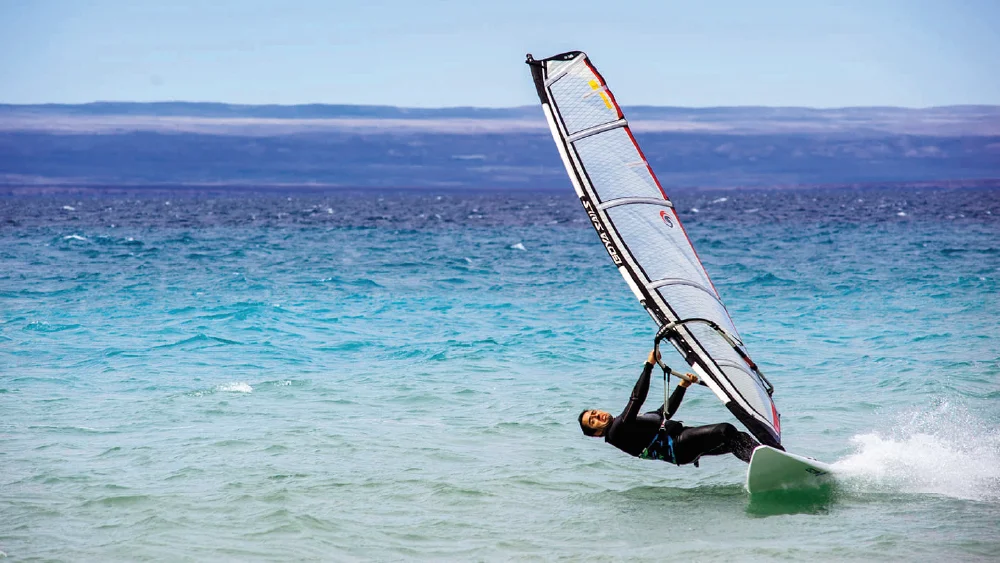
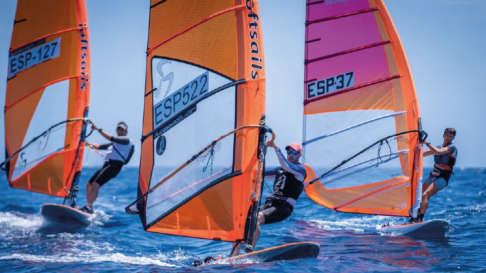
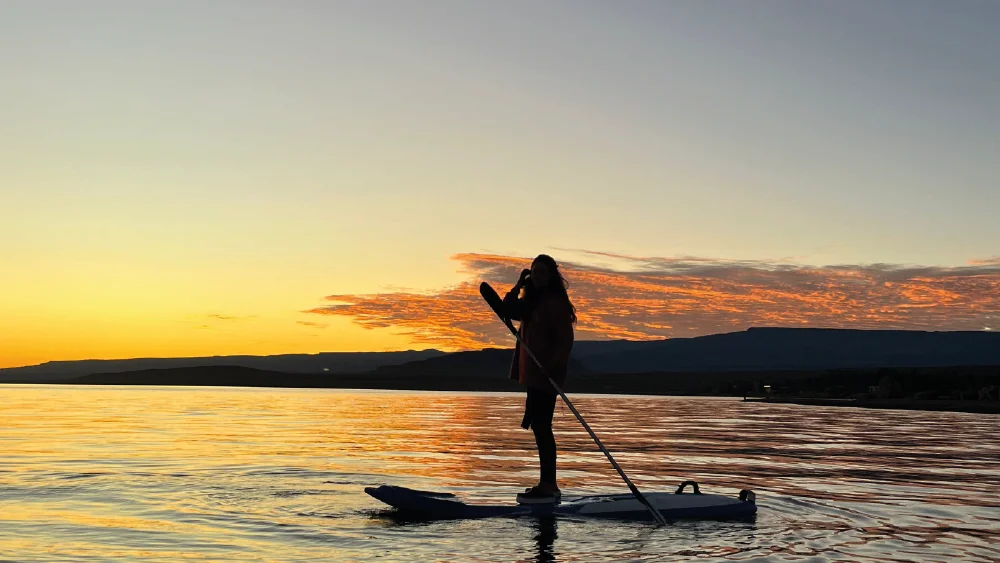
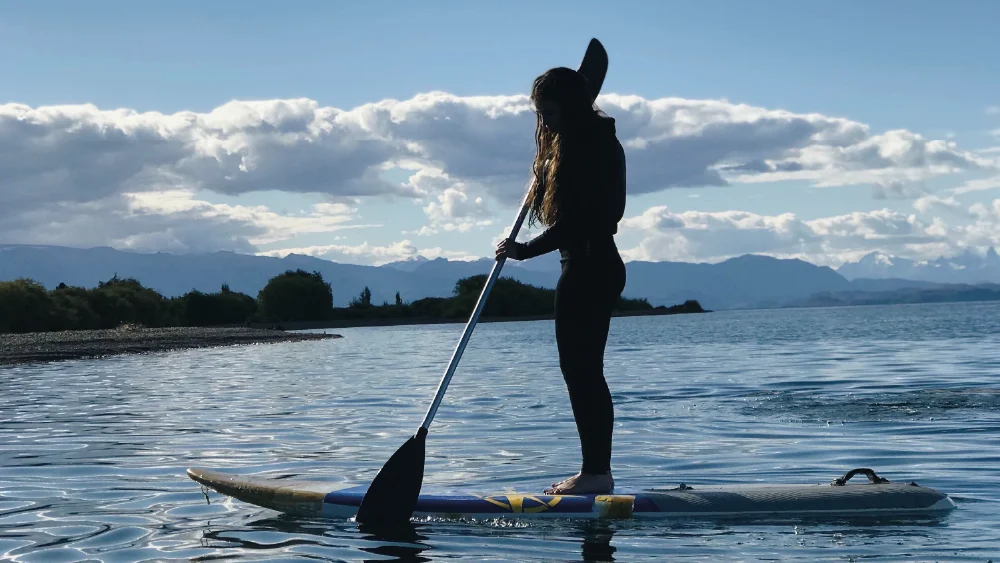

Deportes acuáticos
Windsurf en la patagonia

La fuerza del viento como motor de la aventura
Los Antiguos, Santa Cruz, abre sus puertas para descrubrir un sinfín de actividades en contacto con la naturaleza. El windsurf es una de ellas. El viento del sur, el lago cristalino y los majestuosos paisajes de la Patagonia brindan el marco ideal para practicar este desafiante deporte. Esta es la historia de un apasionado que elige este destino para navegar. Gerardo Quintana, más conocido como "Richi", es oriundo de Caleta Olivia, Santa Cruz, y dio sus primeros pasos en el windsurf a los siete años. "Encontré la manera de trabajar y disfrutar al mismo tiempo" explica Richi, quien pasa gran parte de sus días persiguiendo el viento y las olas por distintos paises. Hawái, Sudáfrica y Brasil son algunos de sus "points" preferidos para pasar meses arriba de la tabla.
Sudamericano 2023 de windsurf

Argentina recibe a destacados atletas sudamericanos de Fórmula Foil
Atletas de Brasil, Uruguay, Chile y Argentina (país anfitrión) participarán en un evento que contará con una flota de alto nivel, integrada por competidores experimentados que actualmente disputan campeonatos nacionales e internacionales. San Rafael será el escenario del Campeonato Sudamericano 2023 de Windsurf Fórmula Foil, que se desarrollará del 26 al 29 de octubre en las aguas de El Nihuil. El certamen contará con la fiscalización de la Asociación Internacional de Windsurf (IWA), la Federación Argentina de Yachting (FAY) y la Asociación Mendocina de Windsurf, según informaron los organizadores del Club de Pescadores de San Rafael. El presidente de la Subcomisión de Vela del Club de Pescadores de San Rafael, Diego Ripa, destacó el nivel de los competidores que arribarán al evento: “Ya tenemos un grupo grande de uruguayos con altísimo nivel, además de brasileños, chilenos y argentinos. Hay que tener en cuenta que Argentina representa en el mundo una gran flota dentro del Windsurf Foil”. La competencia se centrará en la Fórmula Foil, una disciplina que combina destreza y velocidad, y que reúne a los atletas sudamericanos más destacados. Su particularidad radica en la aleta invertida (foil) incorporada en la tabla, que permite al deportista elevarse al ganar velocidad, despegándose del agua y navegando sobre ella, alcanzando velocidades de hasta 70 kilómetros por hora.
La manera más tranquila de remar

Explorar el agua desde la calma y el equilibrio
El Stand Up Paddle, también conocido como SUP, es otra manera de conectarse con los espejos de agua de la Patagonia, explorar nuevos horizontes y realizar actividad física. El SUP es una modalidad del surf que consiste en pararse sobre una tabla y propulsarse mediante un remo. Esta disciplina puede practicarse en mar abierto, ríos, lagos, lagunas y esteros. Los lagos de la Patagonia son el entorno ideal para desarrollarla, como el Lago Buenos Aires, en Los Antiguos (Santa Cruz). Sin embargo, como toda actividad realizada en un entorno natural, debe practicarse de manera segura. Bonati hizo hincapié en que “es un deporte que puede practicar cualquiera”, siempre que se respeten las medidas de seguridad. En aguas planas —como ríos y lagunas— es obligatorio ingresar con chaleco salvavidas. “La única medida de seguridad reglamentaria es un velcro que se ajusta al tobillo y va atado a la tabla. Se llama pita. Es indispensable para que no se pierda la tabla y también como medida de seguridad para el resto”, explicó Bonati. Por su parte, Elal agregó: “Es una zona con muchas olas, pero el riesgo se enfrenta sabiendo cuidarse: cómo colocar la tabla cuando la ola viene de frente y cómo salir de ella. Lo primero que enseño es a subirse a la tabla, no a pararse. No se sube desde cualquier lado, se sube desde el medio.”
Equilibrio, técnica y conexión con el agua

Una experiencia que invita a aprender, moverse y conectar con el agua
El instructor remarcó: “La primera clase se trata de aprender las partes del equipo, cómo sostener el remo, conocer las técnicas de remada y luego aprender a pararse. Yo los incito a caerse para que aprendan a subirse nuevamente.” Por otra parte, agregó: “Siempre hay público nuevo de todas las edades. La gente más grande es la más entusiasmada. Este es un deporte acuático, limpio y sano; se utilizan todos los grupos musculares y el equilibrio. Todo el cansancio se compensa con la satisfacción de entrar en el agua.” Las clases se reservan en “Locos por el Viento” (Los Antiguos, Santa Cruz), un espacio que funciona como guardería náutica y alquiler de tablas de SUP, windsurf y kitesurf, entre otros. Cada clase tiene una duración de una hora y media e incluye todo el equipo necesario (tabla, remo, pita y traje de neoprene). “En ese tiempo se enseña desde cómo colocarse el traje de neoprene hasta reconocer el equipo. Luego pasamos al agua, donde permanecemos aproximadamente una hora”, completó Bonati.